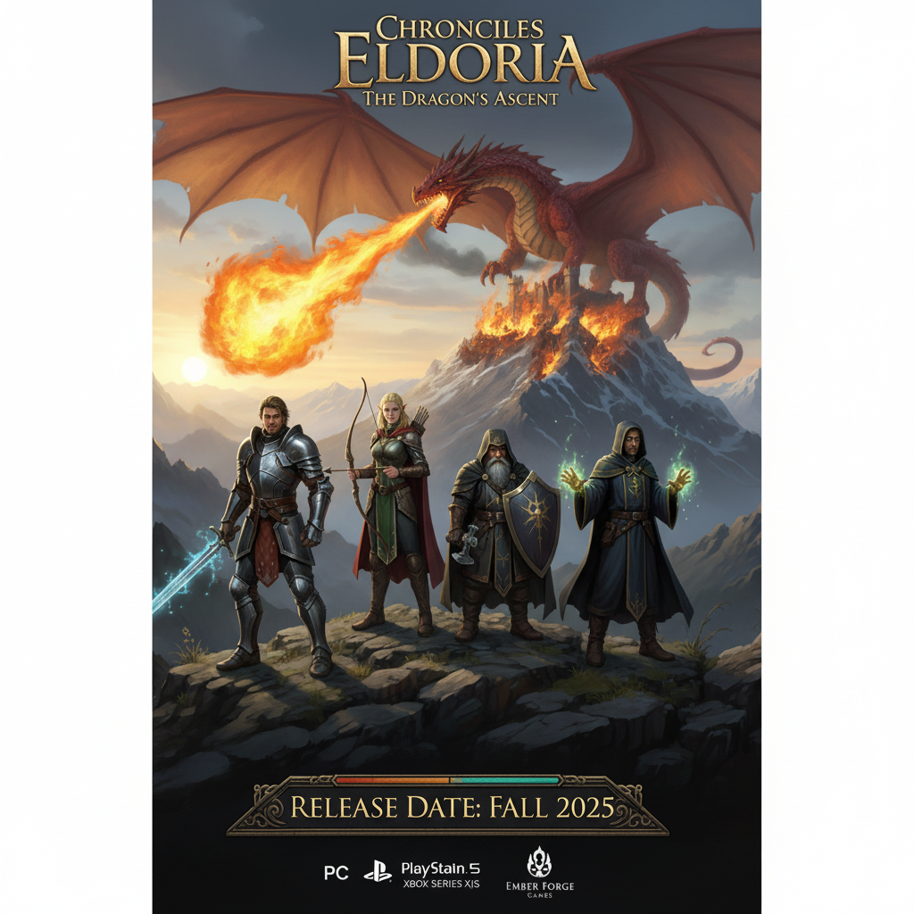
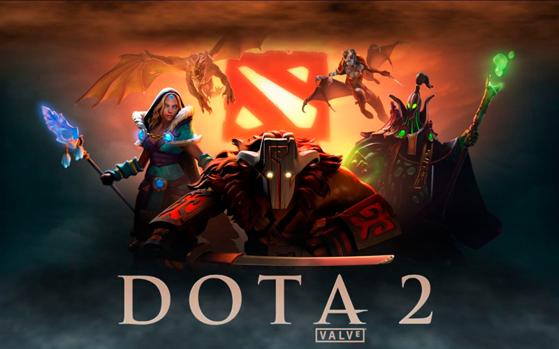
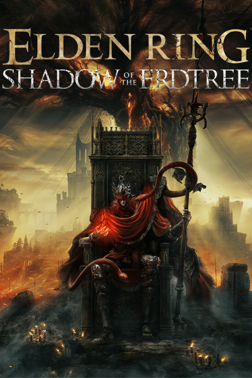

Eldora
Nas terras envelhecidas de Eldoria, o sol se ergue sobre picos nevados e vales esquecidos, mas a sua luz esconde uma sombra crescente. Há eras, dragões vagavam pelos céus, seus rugidos ecoando a fúria das montanhas. Agora, o mais temível deles, Kalroth, o Ancião, despertou de seu sono milenar. Sua presença lançou uma praga de medo e desespero. Vilas foram incendiadas, reinos tremeram, e a esperança se tornou uma brasa fraca. Mas nas lendas, existe uma profecia: quatro heróis, unidos pelo destino, se erguerão contra a escuridão. Um guerreiro de coração puro, uma arqueira com a visão aguçada, um anão com a força da terra e um mago com a sabedoria dos antigos. Eles são a última esperança de Eldoria. Uma jornada épica aguarda, através de florestas encantadas e masmorras escuras, enfrentando criaturas terríveis e descobrindo segredos esquecidos. A coroa de Kalroth está em jogo, e com ela, o destino de todo o reino. Você está pronto para forjar sua própria lenda? Você está pronto para enfrentar o dragão? Chronicles of Eldoria: The Dragon's Ascent. A aventura aguarda.

RPG MAKER MZ: Sua Lenda Começa Aqui.
Você tem uma história em sua mente? Um reino para governar, monstros para derrotar, heróis para guiar? Você sonha em criar aquele RPG épico que sempre quis jogar, mas achou que a programação era uma barreira intransponível? Bem-vindo ao RPG MAKER MZ, a chave mestra para desbloquear seu universo de fantasia! Esqueça as linhas de código complexas e os tutoriais assustadores. Com o RPG Maker MZ, você é o arquiteto supremo, o narrador principal, o designer de mapas e o mestre de masmorras "–" tudo isso com uma facilidade sem precedentes. Construa mundos vastos e intrincados com um simples sistema de "arrastar e soltar" baseado em tiles. Popule suas cidades com personagens únicos, cada um com sua própria história e missões que aguardam os aventureiros. Crie diálogos envolventes, resolva quebra-cabeças astutos e programe sistemas de batalha emocionantes, tudo através de um editor de eventos intuitivo que dá vida às suas ideias com um piscar de olhos. Com o RPG Maker MZ, a única limitação é a sua imaginação. Personalize heróis, vilões e até mesmo as músicas que embalam suas jornadas. E quando sua obra-prima estiver pronta, compartilhe-a com o mundo, exportando-a para PC, mobile e até mesmo navegadores web! Sua saga pessoal aguarda para ser escrita. Abrace o poder do RPG MAKER MZ e transforme seus sonhos em realidade jogável. Sua lenda. Suas regras. Crie seu RPG. Hoje.

DOTA 2: O Campo de Batalha Definitivo dos Deuses!
Você já se perguntou o que acontece quando os seres mais poderosos de universos colidem em uma guerra sem fim? Quando a estratégia encontra a destruição e cada segundo decide o destino de um mundo? Bem-vindo a Dota 2! Este não é um jogo qualquer. Dota 2 é a arena onde lendas são forjadas e hegemonias são desafiadas a cada partida. Duas equipes de cinco heróis lendários se enfrentam em um campo de batalha simétrico, o Ancião de cada lado pulsando com energia vital – e seu objetivo é proteger o seu e aniquilar o do inimigo! Mas não se engane: a simplicidade da premissa esconde uma profundidade estratégica abissal. Com mais de uma centena de heróis únicos, cada um com suas próprias habilidades devastadoras, estilos de jogo distintos e papéis cruciais, as possibilidades táticas são infinitas. Você será um tank que absorve o dano, um carry que destrói inimigos no final do jogo, um suporte que muda o rumo da batalha, ou talvez um iniciador que mergulha de cabeça no caos? Cada partida é uma nova história. Da fase de "laning" onde você cultiva recursos e domina sua rota, às escaramuças selvagens na floresta e às lutas de equipe épicas que decidem o jogo, Dota 2 exige coordenação, comunicação e a capacidade de pensar um passo à frente do seu adversário. Mergulhe no universo de Dota 2. Desvende os mistérios de seus heróis, domine seus feitiços e itens, e sincronize-se com seus companheiros para triunfar sobre o caos. A glória aguarda os dignos. Dota 2: A guerra eterna pelo Ancião. Você tem o que é preciso para ser a próxima lenda?

ELDEN RING Shadow of the Erdtree Edition
Você ousa se aventurar em um mundo onde a loucura espreita em cada sombra e a glória é conquistada com sangue e aço? Onde a morte é apenas o começo de uma nova batalha e a lenda é escrita com a lâmina da sua espada? Bem-vindo ao ELDEN RING! Das mentes visionárias por trás de Dark Souls e o criador de Game of Thrones, George R.R. Martin, surge um épico de fantasia sombria sem precedentes. As Terras Intermédias, antes abençoadas pelo poder do Elden Ring e governadas pela Rainha Marika, a Eterna, agora jazem em fragmentos. O Anel foi estilhaçado, seus semideuses herdeiros corrompidos pela loucura, e uma névoa de morte e desespero se abateu sobre o mundo. Você é um Maculado, um exilado que perdeu a graça da Térvore, agora convocado de volta a estas terras amaldiçoadas. Seu propósito? Buscar os fragmentos do Elden Ring, desafiar os semideuses enfurecidos e se tornar o Lorde Pristino. Explore um vasto e deslumbrante mundo aberto, repleto de paisagens de tirar o fôlego, masmorras traiçoeiras e chefes colossais que farão seu coração gelar. Cavalgue pela planície em seu corcel espectral, Torrente, descubra segredos esquecidos em castelos em ruínas e enfrente criaturas grotescas que habitam cada canto deste reino despedaçado. Elden Ring não é apenas um jogo; é uma jornada implacável de descoberta, combate visceral e narrativa profunda. Cada vitória é conquistada com suor e estratégia, cada derrota é uma lição brutal. Empunhe uma miríade de armas e magias, personalize seu estilo de jogo e enfrente desafios que testarão os limites de sua resiliência. As Terras Intermédias esperam. A graça há muito perdida sussurra seu nome. ELDEN RING: Erga-se, Maculado. A coroa do Elden Lord o aguarda.